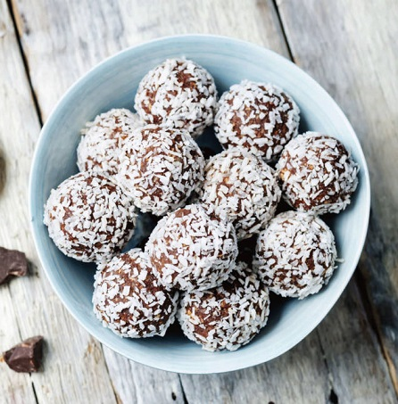

Prep Time: 15 minutes
Total Time: 1 hour, 15 minutes
Makes about 20.

Ingredients
200 grams (2 cups) quick-cooking oats (certified gluten-free as needed)
100 grams (1/2 cup) muscovado sugar or other unrefined cane sugar
3 tablespoons unsweetened cocoa powder
1/4 teaspoon fine sea salt
130 grams (2/3 cup) coconut oil, softened (substitute the same weight in unsalted butter, softened)
2 tablespoons strong coffee, cooled (substitute non-dairy milk or water if avoiding caffeine)
35 grams (1/3 cup) unsweetened grated coconut, for coating
Instructions
In a blender or food processor, combine the oats, sugar, cocoa powder, and salt. Process in a few short pulses to grind the oats to a fine powder.
Tip into a large mixing bowl. Add the coconut oil and coffee, and mix, first with a dough whisk or spatula, then with your hands, until a dough forms. It should be slightly sticky.
Scoop out rounded tablespoons of the dough and roll into balls. Set aside as you go.
In a shallow soup plate, put the grated coconut. Roll the balls in the coconut to coat.
Refrigerate for at least 1 hour. I like them best brought slightly back to room temperature before eating.
The chocolate balls will keep fresh for a couple of weeks, refrigerated in an airtight container, Enjoy!